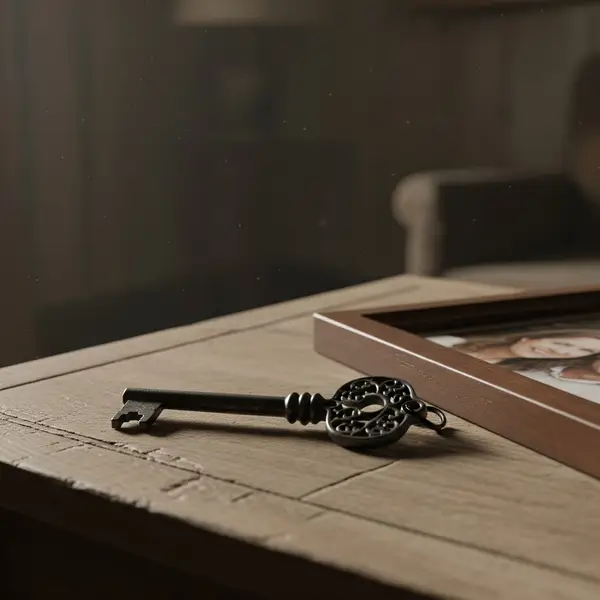
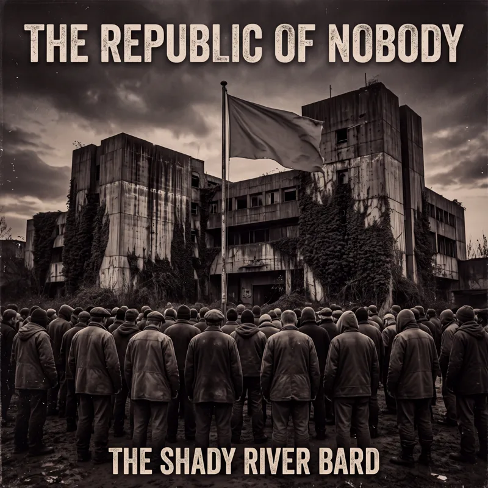
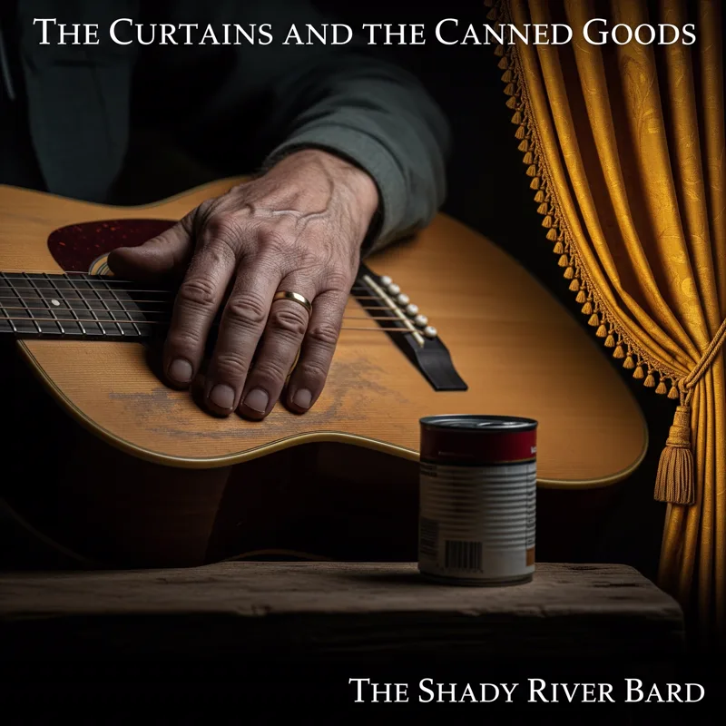
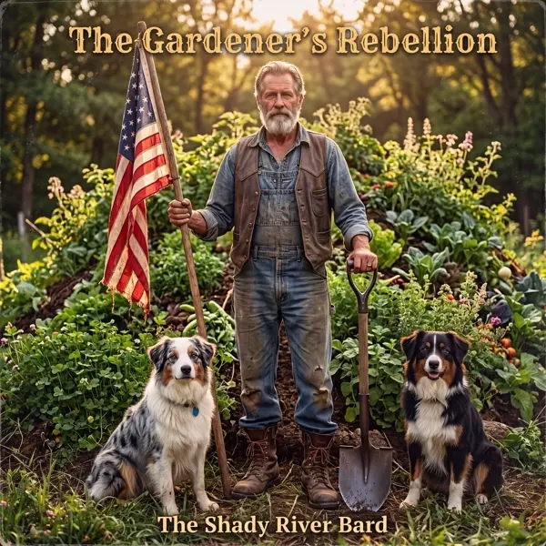

Where the Soil Meets the Signal.
A unified creative ecosystem: a 26-album concept discography chronicling the human spirit, a working permaculture homestead in Western Washington, deep reflective essays, and the Friends of the Bard creative fellowship.
Two Inseparable Anchors
Begin with our deeply personal, raw acoustic folk blues or anchor your inquiry in the international creative fellowship of the Scottish Literary Salon.

How I Disintegrated
A devastatingly honest acoustic portrait of the slow, compounding landslide of loss and grief. Fingerpicked acoustic guitar and unforgettable vocal resonance.

Friends of the Bard
Kindred essayists, poets, and thinkers. Enter Trevor Swistchew's Scottish Literary Salon, featuring 27 essays, a 55-song Suno music chamber, and 29 collected poems.
Four Pillars of the River
Open a pathway to explore each domain: the 26-album concept discography, the working homestead soil, the Substack chronicles, or the Friends of the Bard fellowship.
The Discography
26 full-length concept albums spanning folk, acoustic blues, americana, and political folk-rock.
The Homestead
A working 7-acre homestead in Western Washington practicing soil building, forestry, and self-reliance.
The Chronicles
Long-form essays, track-by-track deconstructions, and four companion novellas on Substack.
Friends of the Bard
Kindred thinkers and literary fellows. Featuring Trevor Swistchew's Scottish Salon, 55 songs & 29 poems.
Selected Acoustic & Narrative Compositions
How I Disintegrated
A raw acoustic ballad charting the gradual landslide of loss, grief, and human unraveling.
The Same Boot
Political folk-rock anthem exposing how manufactured division keeps working citizens under one boot.

Nobody's Listening
The visceral isolation of everyday citizens speaking truth into institutional deafness.

The Curtains & Canned Goods
A bittersweet winter portrait of rural survival, stocked pantry shelves, and quiet resilience.

My Brother is a Mark
A stinging critique of populist cons, algorithmic hooks, and watching a sibling get played.

Strings and Scythes
Intricate acoustic strings matched with the rhythm of manual scythe harvesting and agrarian dignity.
The Shady River Homestead, LLC
The songs do not emerge from an abstract vacuum. They are anchored in a working 7-acre homestead on the Cedar River in Western Washington, where soil building, regenerative agriculture, and physical labor inform the music's agrarian ethos.
Regenerative Care
Compost layering, perennial plantings, and rotational systems that heal degraded timberland into biologically rich soil.
Physical Labor
Growing food, growing the soil, supporting the community, and living through the Pacific Northwest rainy seasons.
Self-Reliance
A sanctuary from digital frenzy where human purpose is measured in garden yields, warm hearths, and lasting songs.
The Shady River Chronicles
Published on Substack, the Chronicles host long-form essays on human-AI co-creation, track-by-track lyric analyses, and four dedicated companion novellas that deeply explore the characters and themes behind key albums.
The Gray Ledger
Ageism, invisible lives, and discarded wisdom.
The Fracture
Generational fault lines and common ground.
The Great Inversion
Financialization and socioeconomic realignment.
The Lucidity Protocol
Algorithmic addiction and cognitive sovereignty.
Trevor Swistchew • The Scottish Literary Salon
Trevor Swistchew
The Scottish Literary Salon, Empirical Inquiries & Companion Compositions
Trevor writes deeply considered prose interrogating constitutional covenants (the 1689 Claim of Right), non-duality, and the human condition. His writing inspired the heavy-rock spoken-word composition “This Is It” recorded with The Shady River Bard.
Explore the Complete 26-Album Discography Vault
Access the deep archives containing full lyrics vaults, musical analyses, track deconstructions, and official video playlists for all 26 concept albums—completely integrated in staging.